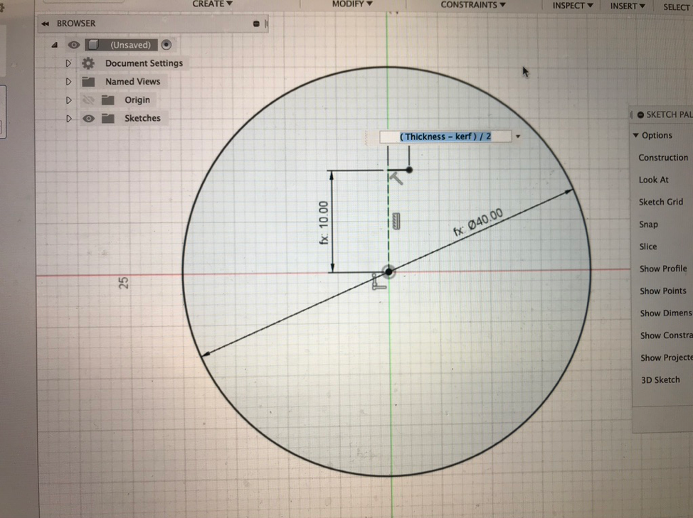

Week 2: 2D Design and Cutting
As a kid, and even more recently, I've always loved creating 2D shapes and art with xacto knife cutouts. I enjoyed bringing 2D cutting into 3 dimensions this week immensly.

Using Nathan's polar pattern method, I started by making a circle with 6 cut-outs in order to test my kerf value.

Initially, the two circles didn't hold together firmly, instead slowly sliding apart. After talking with Nathan, I thought that I might have incorecctly measured the thickness of the cardboard; only measuring the most uncompressed cardboard dimension.

However, when I went home over the weekend for my bandmate's wedding, I brought the two peices with me. When I showed them to my father, and they, seeminly magically, fit together perfectly. My assumption is the high humidity in DC let the cardboard expand slightly.

For my big finish, I wanted to create a set of Dungeons and Dragons dice made as a cardboard kit. I decided to start with a D4. While I hope to eventually be able to engrave a decorative number on each side, I started by cutting simple numbers out of each side.

My first design had two problems. One, I foolishly put 1 number on each side, not the three numbers required. Secondly, I didn't take into acount that the ciruclar connectors were not angled. The only other time I've used this slotting method was with wood, using a chop saw which could be angled. Because the cardboard is fleixble, I was still able to assemble the die
Next step: adding the other dice and engraving numbers!